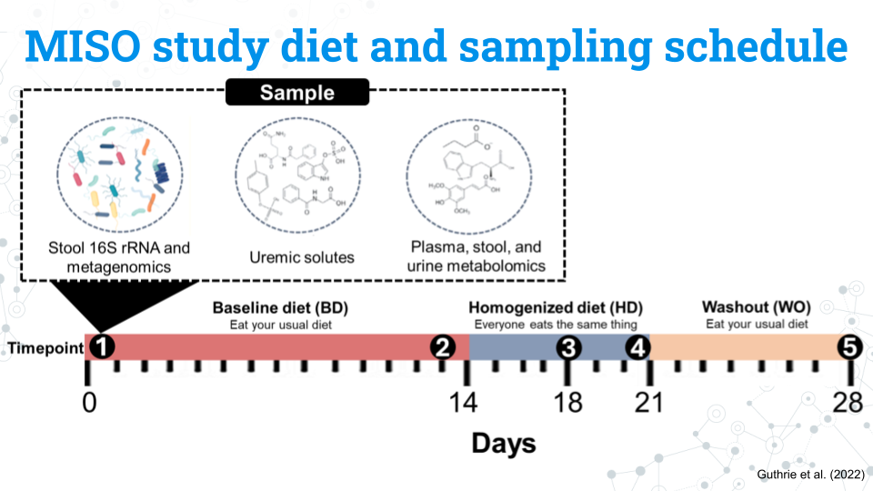

Welcome
16S miniCURE Sampler
This module contains material from across our 16S Human Gut Microbiome miniCURE for you to sample including manipulating phyloseq objects, plotting the microbiome composition of different samples, and an alpha diversity analysis. Additional analyses that are not featured here include multidimensional analysis and differential abundance of microbes between samples.
Learning Goals
- Sample a subset of the C-MOOR 16S Human Gut Microbiome miniCURE
Version: 1
Introduction
Welcome to the 16S miniCURE sampler! This module showcases key parts of our 16S Human Gut Microbiome miniCURE and highlights the features of learnr tutorials. For a quick summary of the steps, benefits, and applications of 16S metabarcoding, see the video below.
Meet MISO
The dataset used here is the MISO dataset from the Impact of a 7-day homogeneous diet on interpersonal variation in human gut microbiomes and metabolomes by Guthrie et al. (2022). The MISO data is featured during the tutorial modules and is available for students to choose for their research projects, among other datasets.
MISO study diet and sampling schedule

Experimental design for the MISO study by Guthrie et al. (2022): Figure edited by Sayumi York (July 11, 2025).
The figure above shows the study design for the MISO study.
- Participants eat their usual, baseline diet (BD) for 14 days
- Participants all eat the same diet, the homogenized diet (HD), for 7 days
- Participants return to their usual diet during the washout (WO) period for 7 days
The study lasts a total of 28 days. Samples from the blood, stool, and urine, our metabolite and 16S rRNA data are taken at 5 different timepoints:
- Timepoint 1: Day 0 (the start of the study)
- Timepoint 2: Day 13
- Timepoint 3: Day 17
- Timepoint 4: Day 21
- Timepoint 5: Day 28
Ultimately, the MISO study asked: How does diet impact the gut microbiome? by standardizing peoples’ diets. They also investigated other variables such as age that are suspected to play a role in the human gut microbiome.
Exercise 1: Exploring metadata
MISO study variables
We have a number of variables we can use in our analysis, not all of which are included below. Notice that the variables for the study and subjects are in lowercase. R is case sensitive so we must access the variables using the same pattern of capitalization they use.
| Variable | What is it? | Factors |
|---|---|---|
| subject | A unique ID given to each subject (participant) | S## |
| timepoint | The 5 samplings that occur on days 0, 13, 17, 21, and 28 coded as timepoints 1 through 5 | 1, 2, 3, 4, 5 |
| diet | The diet the subject was on during the sampling | BD, HD, WO |
| age | The age in years of the subject | A continuous variable from 23 to 75 years old |
To get a better understanding of the data and get some experience running some code, let’s try and explore MISO study’s metadata. The code below lists all the unique subjects (study participants) in the dataset. To look at other variables, replace “subject” with another variable’s name.
Make sure you keep the double quotations (“) and that your variable is in all lowercase to match the original code.
unique(data.frame(sample_data(miso)[, "subject"]))Exercise 2: Microbiome composition
The code below plots the taxonomy profile of individuals (subjects) based on Phylum.
plot_bar(miso, x="subject", fill = "Phylum",) +
geom_bar(aes(color = Phylum, fill = Phylum), stat = "identity", position = "stack")Notice that the y-axis currently has “Abundance” on a scale of 1-5. Why is this the case? We are working with proportions, so each sample should add up to 1, which represents 100% of a sample. For each subject we sampled them at 5 different time points. Thus, we have a total of “5” for all time points included.
Try to alter the code to answer the following questions as needed.
Exercise 3: Alpha diversity
Alpha diversity measures biodiversity within a given sample. For this analysis uses Gini-Simpson’s index, where a higher alpha diversity measure correlates with higher biodiveristy. Generally, higher biodiveristy is associated with a more stable microbiome.
We have three places in this code we can swap out to ask questions:
- What is plotted on the x-axis
- What variable is represented by the color of data points
- What variabe is represnted by the shape of the data points
Try running the code below and answering the questions.
plot_richness(miso_counts, x="timepoint",
color="subject",
shape="diet",
measures= "Simpson")Works cited
Aden-Buie G, Schloerke B, Allaire J, Rossell Hayes A (2023). learnr: Interactive Tutorials for R. https://rstudio.github.io/learnr/, https://github.com/rstudio/learnr
Evans, Ciaran, Johanna Hardin, and Daniel M. Stoebel. “Selecting between-sample RNA-Seq normalization methods from the perspective of their assumptions.” Briefings in bioinformatics 19.5 (2018): 776-792.
Guthrie, Leah, et al. “Impact of a 7-day homogeneous diet on interpersonal variation in human gut microbiomes and metabolomes.” Cell host & microbe 30.6 (2022): 863-874.
McMurdie, Paul J., and Susan Holmes. “phyloseq: an R package for reproducible interactive analysis and graphics of microbiome census data.” PloS one 8.4 (2013): e61217.
McMurdie, Paul J., and Susan Holmes. “Waste not, want not: why rarefying microbiome data is inadmissible.” PLoS computational biology 10.4 (2014): e1003531.
R Core Team (2024). R: A Language and Environment for Statistical Computing. R Foundation for Statistical Computing, Vienna, Austria. https://www.R-project.org/.
Stoudt, Sara, Anthony D. Scotina, and Karsten Luebke. “Supporting Statistics and Data Science Education with learnr.” Technology Innovations in Statistics Education 14.1 (2022).
Wickham, Hadley. “ggplot2.” Wiley interdisciplinary reviews: computational statistics 3.2 (2011): 180-185.